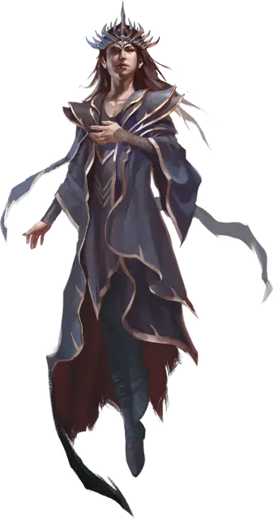

Иггвилв «Королева ведьм»
Iggwilv the Witch Queen
Средняя Фея (Волшебница), хаотично-нейтральная, именной НИП

Класс Доспеха 19 (мантия архимага)
Хиты 255 (30к8 + 120)
Скорость 30 футов
| мод | спас | ||
|---|---|---|---|
| СИЛ | 10 | +0 | +0 |
| ЛОВ | 18 | +4 | +4 |
| ТЕЛ | 18 | +4 | +4 |
| мод | спас | ||
|---|---|---|---|
| ИНТ | 27 | +8 | +14 |
| МДР | 12 | +1 | +7 |
| ХАР | 23 | +6 | +12 |
Навыки История +14, Магия +20, Природа +14
Иммунитет к состояниям испуг, очарование
Чувства истинное зрение 60 футов, пассивное Восприятие 11
Языки Бездны, Драконий, Инфернальный, Небесный, Сильван, Эльфийский
Опасность 20 (25000 опыта)
Бонус мастерства +6
Особенности
Особое снаряжение. Иггвилв носит амулет планов [amulet of the planes] и облачена в мантию архимага [robe of the archmagi].
Дар бессмертия. Иггвилв невосприимчива к любому воздействию, которое могло бы состарить её и она не может умереть от старости.
Легендарное сопротивление (3/день). Если Иггвилв проваливает спасбросок, она может вместо этого сделать спасбросок успешным.
Сопротивление магии. Иггвилв совершает с преимуществом спасброски от заклинаний и прочих магических эффектов (Эта особенность даруется ей мантией архимага.)
Действия
Мультиатака. Иггвилв совершает две атаки Завораживающим снарядом.
Завораживающий снаряд. Рукопашная или дальнобойная атака заклинанием: +16 к попаданию, досягаемость 5 футов или дистанция 120 футов, одна цель. Попадание: 25 (5к6 + 8) урона электричеством, и если цель - существо, оно должно совершить спасбросок Мудрости Сл 22, иначе станет очаровано Иггвилв до начала её следующего хода.
Разлом Бездны (Перезарядка 5-6). Иггвилв на мгновение открывает Разлом Бездны в 120 футах от нее. Разлом представляет собой сферу радиусом 20 футов. Каждое существо в этой области должно совершить спасбросок Телосложения Сл 22, получая 40 (9к8) урона некротической энергией при провале или половину этого урона при успехе. Кроме того, существует 50-процентная вероятность того, что после этого 3 хезроу [hezrou] появятся в незанятых пространствах сферы. Они действуют как союзники Иггвилв, ходят сразу после неё и не могут вызывать других демонов. Они остаются до тех пор, пока не умрут или пока Иггвилв не отпустит их действием.
Использование заклинаний. Иггвилв накладывает одно из следующих заклинаний, используя Интеллект в качестве базовой характеристики (Сл спасброска от заклинаний 24, +16 к попаданию атаками заклинаниями):
• Неограниченно: обнаружение магии [detect magic], маскировка [disguise self], невидимость [invisibility], свет [light], волшебная рука [mage hand], сообщение [message], фокусы [prestidigitation], жуткий смех Таши [Tasha's hideous laughter];
• 3/день каждое: рассеивание магии [dispel magic], полёт [fly], превращение [polymorph];
• 1/день каждое: лабиринт [maze], телекинез [telekinesis], телепортация [teleport], исполнение желаний [wish].
Бонусные действия
Фейский шаг. Бонусным действием Иггвилв может телепортироваться на расстояние до 30 футов в свободное пространство, находящееся в её поле зрения.
Реакции
Отмена заклинания (2/день). Когда Иггвилв видит существо в пределах 60 футов от себя, накладывающее заклинание, она пытается прервать его. Если существо накладывает заклинание, используя ячейку заклинаний 8-го уровня или ниже, его заклинание терпит неудачу и не оказывает никакого эффекта. Если он накладывает заклинание 9-го уровня, оно должно преуспеть в спасброске Интеллекта Сл 22, иначе заклинание не срабатывают и не оказывает никакого эффекта.
Легендарные действия
Иггвилв может совершать 3 легендарных действия, выбирая из указанных ниже вариантов. Лишь одно легендарное действие может быть совершено за раз, и только в конце хода другого существа. Иггвилв восстанавливает истраченные действия в начале своего хода.
Ворожба. Иггвилв накладывает заклинание или использует Фейский шаг.
Тёмная речь (стоит 2 действия). Иггвилв произносит фразу на запрещенном языке и нацеливается на одно или два существа, которых она видит в пределах 60 футов от себя. Каждая цель должна преуспеть в спасброске Мудрости Сл 22, иначе получит 11 (2к10) урона психической энергией и становится испуганным Иггвилв в течение 1 минуты. Цель может повторять спасбросок в конце каждого своего хода, оканчивая на себе эффект в случае успеха и тем самым становясь невосприимчивым к Тёмной речи Иггвилв на 24 часа.
Фейское обольщение (стоит 3 действия). Иггвилв нацеливается на одно существо, которое она видит в пределах 60 футов от себя. Цель должна преуспеть в спасброске Харизмы Сл 22, иначе станет одержимой духом феи. Будучи одержимым, цель должна подчиняться командам Иггвилв. Цель может повторить спасбросок в конце каждого своего хода, изгоняя духа феи и оканчивая на себе действие эффекта в случае успеха.
Описание
Иггвилв имеет долгую и легендарную историю во всей мультивселенной. Это приключение представляет легендарную фигуру в ее нынешнем виде.